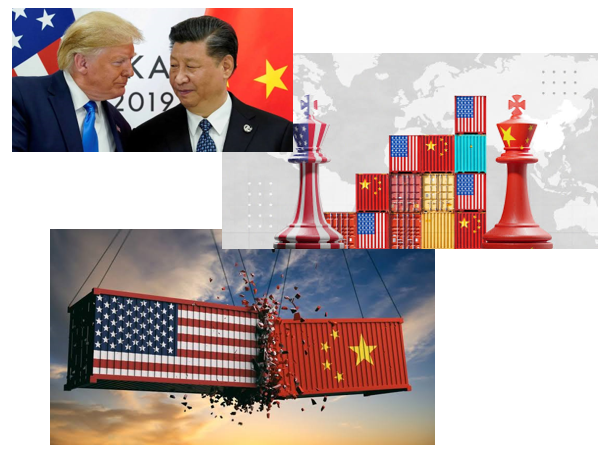

Escalada de la Guerra Comercial entre EE. UU. Y China Sacude la Economía Global

La guerra comercial entre Estados Unidos y China ha entrado en una nueva fase de tensión, marcada por el aumento de aranceles, represalias estratégicas y efectos negativos en los mercados internacionales. Las economías más afectadas hasta ahora son las de ambos países, aunque el impacto global comienza a sentirse con fuerza.
Nuevos Aranceles en Marcha
El presidente de Estados Unidos, Donald Trump, anunció recientemente la imposición de nuevos aranceles del 145% sobre una amplia gama de productos chinos, aunque quedaron excluidos algunos productos electrónicos estratégicos como teléfonos inteligentes y computadoras. La decisión busca proteger al consumidor estadounidense y limitar el daño a la industria tecnológica local.
En respuesta, China ha elevado sus propios aranceles hasta un 125% sobre productos estadounidenses y ha intensificado su presión sobre empresas estadounidenses con investigaciones antimonopolio y restricciones a la exportación de minerales críticos como el galio y el germanio, fundamentales para la industria tecnológica global.
Advertencias Internacionales
La Organización Mundial del Comercio (OMC) ha advertido que el comercio mundial podría contraerse un 0,2% este año, y hasta un 1,5% si las tensiones persisten o se intensifican. La Reserva Federal de EE. UU., por su parte, ha reconocido que la guerra comercial ya está teniendo efectos adversos sobre la economía nacional.
Repercusiones Globales
En el sudeste asiático, varios países expresan su preocupación ante una posible saturación de sus mercados por productos chinos que ya no encuentran destino en EE. UU., lo que podría afectar a las industrias locales y generar pérdida de empleos.
Conclusión
El conflicto comercial entre las dos mayores potencias del mundo parece lejos de resolverse, y los analistas advierten que sus consecuencias podrían extenderse más allá del ámbito económico, afectando también la estabilidad geopolítica y la cooperación internacional en temas clave como tecnología, seguridad y medioambiente.